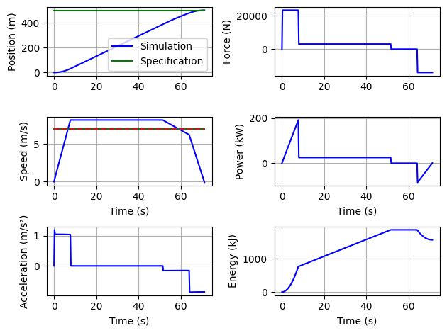
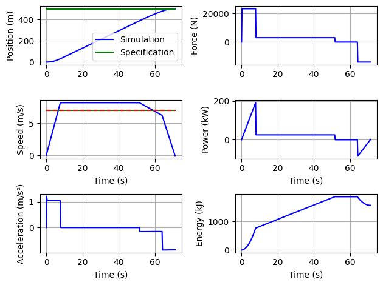
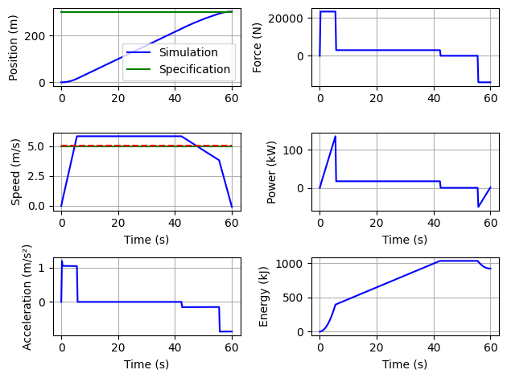
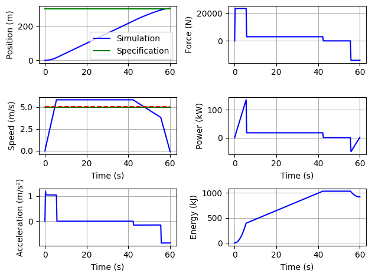

Hydrid Storage Architecture and Specification#
Written by Marc Budinger, INSA Toulouse, France
We will consider here an hybrid solutions with super capacities and traction battery packs. This notebook is dedicated :
to understand main operating limits of super capacitors and batteries
to understand a control architecture enabling to split power between super capacitors and batteries
to specify energy storage requirements of the different energy sources.
The storage element selection approach developed here is inspired by the following publication:
Jaafar, A., Sareni, B., Roboam, X., & Thiounn-Guermeur, M. (2010, September). Sizing of a hybrid locomotive based on accumulators and ultracapacitors. In 2010 IEEE Vehicle Power and Propulsion Conference (pp. 1-6). IEEE.[pdf]
Main operating limits of energy storage components#
To enable the selection of energy storage means, it is necessary to understand their main operational limitations. These limits can be representative:
rapid deterioration that can develop over an operating cycle, for example one journey or a few journeys over the same day.
gradual degradation linked to the lifespan of the component over multiple cycles, months or years, where the accumulation of degradation leads to an irreversible loss of performance.
Questions: Examine the following Figures extract from datasheet of elementary storage cells of supercapacitors or battery (LiFeSO4). Propose selection criteria representative of the main operational limits. Explain how to size a battery taking into account an high number of discharge cycles.


Simulation of a complete line#
The objective of this section is to propose an evolution of the previous python codes to be able to:
simulate the power profile necessary for a complete line comprising several sections.
We will define in particular the type of vehicle, the different lengths of sections between 2 stations (Distances vector), the average speed to be ensured (Speeds vector), the presence of charger in station (Chargers vector), the stopping duration at station (StopDuration vector), the ratio between the maximum braking power and the maximum acceleration power (RatioBrakeMax).
provide the information necessary for sizing the battery/supercapacity packs that could be added.
We assume here an efficiency of the motorization chain of 100%.
Each line section will be optimized in order to meet the requirements defined previously and minimize the energy consumed. -The energy flow or the resulting power demand will be shared between battery and supercapacity with control based on frequency sharing of demands: the low frequency power will be provided by the batteries while the high frequency part will be provided by supercapacitors.
Indicators useful for sizing will then be generated from these power profiles.
take into account the energy that could come from charging stations or catenaries.
This version will only implement the consideration of charging stations.
Each charging station will provide the power to compensate for the energy of the travel from the last station.
Here we load all the functions and classes defined in the previous notebook.
%run ./01b_CaseStudy_Specification.ipynb
Vehicle Max Acceleration (depending of max force) is too low or travel distance too small or mean speed too small
Duration of traject for given mean speed: 92.76923076923077s
Consumption per passenger: 21.18 kJ/(Pax.km)
Max energy discharge: 5039 kJ
Consumption per passenger: 103.06 kJ/(Pax.km)


Min acceleration is: 0.3114059332964806m/s²
Vehicle Max Acceleration (depending of max force) is too low or travel distance too small or mean speed too small
Consumption per passenger: 18.74 kJ/(Pax.km)
Max energy discharge: 7420 kJ


/tmp/ipykernel_2914/2473967107.py:17: DeprecationWarning: Conversion of an array with ndim > 0 to a scalar is deprecated, and will error in future. Ensure you extract a single element from your array before performing this operation. (Deprecated NumPy 1.25.)
k1=float(sol.x)
0.036125972011676784
[0.036125972011676784, 1, 0.9638740279883232]
Consumption per passenger: 20.44 kJ/(Pax.km)
Max energy discharge: 4450 kJ

Vehicle Max Acceleration (depending of max force) is too low or travel distance too small or mean speed too small
message: Optimization terminated successfully.
success: True
fun: 1.1056164036252494
x: [ 8.159e-02 5.538e-01 9.636e-01]
nit: 22
nfev: 1039
population: [[ 8.159e-02 5.538e-01 9.636e-01]
[ 7.906e-02 5.892e-01 9.708e-01]
...
[ 7.868e-02 5.870e-01 9.609e-01]
[ 7.964e-02 6.313e-01 9.675e-01]]
population_energies: [ 1.106e+00 1.107e+00 ... 1.107e+00 1.114e+00]
Optimal vector : [0.08159203 0.55383134 0.96357635]
Brake power/Acceleration power ratio is: 0.41714489133725874
Constraints vector : [0.000931444698155803, 0.00020729684908794098, 0.18285510866274124]
Consumption per passenger: 16.89 kJ/(Pax.km)
Max energy discharge: 3453 kJ
######################################
message: Optimization terminated successfully.
success: True
fun: 1.4822231652256583
x: [ 1.403e-01 3.752e-01 9.659e-01]
nit: 37
nfev: 1714
population: [[ 1.403e-01 3.752e-01 9.659e-01]
[ 1.438e-01 3.754e-01 9.669e-01]
...
[ 1.444e-01 3.773e-01 9.660e-01]
[ 1.335e-01 3.920e-01 9.656e-01]]
population_energies: [ 1.482e+00 1.482e+00 ... 1.487e+00 1.499e+00]
Optimal vector : [0.14034933 0.37516606 0.96589805]
Brake power/Acceleration power ratio is: 0.36515128415938675
Constraints vector : [0.0007442074331796862, 0.00020729684908794098, 0.23484871584061323]
Consumption per passenger: 16.93 kJ/(Pax.km)
Max energy discharge: 3337 kJ
Calculation of energy consumption of different vehicles:
Tramway :
Vehicle Max Acceleration (depending of max force) is too low or travel distance too small or mean speed too small
message: Optimization terminated successfully.
success: True
fun: 1.2482194479805129
x: [ 9.548e-02 4.960e-01 9.787e-01]
nit: 20
nfev: 949
population: [[ 9.548e-02 4.960e-01 9.787e-01]
[ 8.311e-02 5.908e-01 9.698e-01]
...
[ 7.333e-02 6.077e-01 9.871e-01]
[ 5.157e-02 7.568e-01 9.463e-01]]
population_energies: [ 1.248e+00 1.256e+00 ... 1.253e+00 1.273e+00]
Consumption per passenger: 19.71 kJ/(Pax.km)
----
Trolleybus :
Vehicle Max Acceleration (depending of max force) is too low or travel distance too small or mean speed too small
message: Optimization terminated successfully.
success: True
fun: 1.1171417308272777
x: [ 5.240e-02 7.636e-01 9.690e-01]
nit: 18
nfev: 859
population: [[ 5.240e-02 7.636e-01 9.690e-01]
[ 6.005e-02 7.776e-01 9.716e-01]
...
[ 4.443e-02 8.038e-01 9.749e-01]
[ 4.695e-02 8.352e-01 9.700e-01]]
population_energies: [ 1.117e+00 1.121e+00 ... 1.120e+00 1.123e+00]
Consumption per passenger: 33.14 kJ/(Pax.km)
----
Bus :
Vehicle Max Acceleration (depending of max force) is too low or travel distance too small or mean speed too small
message: Optimization terminated successfully.
success: True
fun: 1.1382110888204808
x: [ 5.832e-02 7.675e-01 9.681e-01]
nit: 22
nfev: 1039
population: [[ 5.832e-02 7.675e-01 9.681e-01]
[ 6.035e-02 7.641e-01 9.706e-01]
...
[ 5.422e-02 7.647e-01 9.685e-01]
[ 5.732e-02 7.693e-01 9.674e-01]]
population_energies: [ 1.138e+00 1.138e+00 ... 1.138e+00 1.138e+00]
Consumption per passenger: 34.50 kJ/(Pax.km)
----
Car :
message: Optimization terminated successfully.
success: True
fun: 1.509129192627761
x: [ 7.793e-02 2.409e-01 9.850e-01]
nit: 31
nfev: 1444
population: [[ 7.793e-02 2.409e-01 9.850e-01]
[ 8.997e-02 2.264e-01 9.862e-01]
...
[ 8.514e-02 2.415e-01 9.853e-01]
[ 8.044e-02 2.303e-01 9.847e-01]]
population_energies: [ 1.509e+00 1.509e+00 ... 1.509e+00 1.509e+00]
Consumption per passenger: 99.96 kJ/(Pax.km)
Here we define a line class with all the functionalities described just before.
from scipy import signal
class line():
def __init__(self,Vehicle, Distances,Speeds, Chargers, StopDuration, RatioBrakeMax):
i=0
self.Section=[]
self.Chargers = Chargers # Boolean vector (True = Charger, False = No Charger , at end of te section)
self.StopDuration = StopDuration # [s] station stop duration (scalar)
self.RatioBrakeMax = RatioBrakeMax # [-] Ratio between max braking power / max acceleration power
# initialization of transient evolution (vectors)
self.PowerStorage= [] # Transient evolution of requested power
self.GlobalTime=[] # Time vector for plot and energy integration
self.GlobalNRJStorage=[] # Transient evolution of energy
self.PowerLF = [] # Transient evolution of power (Low Frequency)
self.PowerHF = [] # Transient evolution of power (high Frequency)
self.LFNRJStorage=[] # Time vector for plot and energy integration (Low Frequency)
self.HFNRJStorage=[] # Time vector for plot and energy integration (High Frequency)
self.TotalLineDistance = sum(Distances)
self.dt=0.25 # Time step for numerical integration
# print characteristic of each section
for d,s,c in zip(Distances,Speeds,Chargers):
print("Section %.i: %.i m at %.2f m/s %s charger"%(i+1,d,s, "whith" if c else "without"))
self.Section=self.Section+[OptimSection(Vehicle,d,s,self.RatioBrakeMax,self.dt)]
i=i+1
# Optimization loop of each section of the line
def optimLine(self):
X=[0.1,1,0.9]
for i in range(len(self.Section)):
self.Section[i].optimizeGConso(X)
self.Section[i].plot()
# Power vector concatenation
def CalculPowerStorage(self):
NRJ = 0
self.PowerStorage= []
self.GlobalTime= []
dt=self.dt # [s] pas de temps pour l'integration
# Power vector build thanks concatenation
for i in range(len(self.Section)):
NRJ=NRJ+self.Section[i].NRJsection[-1] # we add here the energy consummed on the section
self.PowerStorage = self.PowerStorage + self.Section[i].psection
# Chargers effect
if (self.Chargers[i] == True and i<(len(self.Section)-1)):
tcharge=NRJ/self.Section[i].Vehicle.Pmax # Charging time caculation function of energy
else:
tcharge=0
if (tcharge>=self.StopDuration):
self.PowerStorage = self.PowerStorage + [-self.Section[i].Vehicle.Pmax]*int(tcharge/dt)
NRJ=0
else:
if (i<(len(self.Section)-1)):
self.PowerStorage = self.PowerStorage + [-self.Section[i].Vehicle.Pmax]*int(tcharge/dt)
self.PowerStorage = self.PowerStorage + [0]*int((self.StopDuration-tcharge)/dt)
if (self.Chargers[i] == True) :
NRJ=0
# Time vector
t=0
for i in range(len(self.PowerStorage)):
self.GlobalTime = self.GlobalTime + [t]
t = t + dt
# Filtering of total power in order to generate LF and HF pwoers
def FilterPower(self, omega):
TF=signal.TransferFunction([1], [1/omega**2, 2*1/omega, 1])
time, self.PowerLF, state = signal.lsim(TF, self.PowerStorage , self.GlobalTime)
self.PowerHF = self.PowerStorage - self.PowerLF
# NRJ vector integration from power vectors
def IntegrateNRJ(self):
t=0
NRJtotal=0
NRJHF=0
NRJLF=0
#NRJTotalAging=0
#NRJLFAging=0
self.HFNRJStorage = []
self.GlobalNRJStorage = []
self.LFNRJStorage = []
dt=self.dt
for i in range(len(self.PowerStorage)):
self.GlobalNRJStorage = self.GlobalNRJStorage + [NRJtotal]
self.HFNRJStorage = self.HFNRJStorage + [NRJHF]
self.LFNRJStorage = self.LFNRJStorage + [NRJLF]
#self.TotalNRJAging = self.TotalNRJAging + [NRJTotalAging]
#self.LFNRJAging = self.LFNRJAging + [NRJLFAging]
t = t + dt
NRJtotal = NRJtotal+(self.PowerStorage[i])*dt
NRJHF = NRJHF+(self.PowerHF[i])*dt
NRJLF = NRJLF+(self.PowerLF[i])*dt
PmaxHF = max(abs(min(self.PowerHF)),max(self.PowerHF))/1e3 # kW
PmaxLF = max(self.PowerLF)/1e3 # kW
PmaxBrakeLF = abs(min(self.PowerLF))/1e3 # kW, Max power braking
NRJHF = (max(self.HFNRJStorage) - min(self.HFNRJStorage))/3600/1e3 # NRJ en kWh
NRJLF = (max(self.LFNRJStorage) - min(self.LFNRJStorage))/3600/1e3 # NRJ en kWh
return PmaxHF, PmaxLF, PmaxBrakeLF, NRJHF, NRJLF
# Main results plot
def plot(self):
fig, axs = plt.subplots(2,1)
try:
axs[0].plot(self.GlobalTime,self.PowerStorage,'b-',label='Total')
axs[0].plot(self.GlobalTime,self.PowerLF,'r-.',label='LF')
axs[0].plot(self.GlobalTime,self.PowerHF,'g-.',label='HF')
except:
pass
axs[0].set_ylabel("Power (W)")
axs[0].legend(bbox_to_anchor=(1.05, 1.0), loc='upper left')
axs[0].grid()
try:
axs[1].plot(self.GlobalTime,self.GlobalNRJStorage,'b-',label='Total')
axs[1].plot(self.GlobalTime,self.LFNRJStorage,'r-.',label='LF')
axs[1].plot(self.GlobalTime,self.HFNRJStorage,'g-.',label='HF')
axs[1].set_ylabel("Energy (J)")
axs[1].legend(bbox_to_anchor=(1.05, 1.0), loc='upper left')
axs[1].grid()
axs[1].set_xlabel('Time (s)')
except:
fig.delaxes(axs[1])
fig.tight_layout()
Example of a line definition#
We can now use this new class to define a bus transport line with the following requirements:
distances: 700, 500, 400, 700, 300, 300, 300, 300, 300, 300 m/s
mean speed: 7, 7, 7, 5, 5, 5, 5, 5 m/s
one final charger
ToulouseC=line(Bus,[700,500,400,700,300,300,300,300,300],[7, 7, 7,5,5,5,5,5],[False,False,False,False,False,False,False,True], 20, 0.6)
#ToulouseC=line(Bus,[700,500,400],[7, 7, 7],[False,False,True], 20, 0.6)
Section 1: 700 m at 7.00 m/s without charger
Vehicle Max Acceleration (depending of max force) is too low or travel distance too small or mean speed too small
Section 2: 500 m at 7.00 m/s without charger
Vehicle Max Acceleration (depending of max force) is too low or travel distance too small or mean speed too small
Section 3: 400 m at 7.00 m/s without charger
Vehicle Max Acceleration (depending of max force) is too low or travel distance too small or mean speed too small
Section 4: 700 m at 5.00 m/s without charger
Section 5: 300 m at 5.00 m/s without charger
Vehicle Max Acceleration (depending of max force) is too low or travel distance too small or mean speed too small
Section 6: 300 m at 5.00 m/s without charger
Vehicle Max Acceleration (depending of max force) is too low or travel distance too small or mean speed too small
Section 7: 300 m at 5.00 m/s without charger
Vehicle Max Acceleration (depending of max force) is too low or travel distance too small or mean speed too small
Section 8: 300 m at 5.00 m/s whith charger
Vehicle Max Acceleration (depending of max force) is too low or travel distance too small or mean speed too small
Each speed profil section can be optimized.
ToulouseC.optimLine()
message: Optimization terminated successfully.
success: True
fun: 1.0789022328098097
x: [ 4.933e-02 8.175e-01 9.794e-01]
nit: 21
nfev: 994
population: [[ 4.933e-02 8.175e-01 9.794e-01]
[ 5.087e-02 8.393e-01 9.753e-01]
...
[ 4.946e-02 8.283e-01 9.823e-01]
[ 4.872e-02 8.413e-01 9.846e-01]]
population_energies: [ 1.079e+00 1.085e+00 ... 1.079e+00 1.080e+00]
message: Optimization terminated successfully.
success: True
fun: 1.090891177386056
x: [ 7.535e-02 8.120e-01 9.544e-01]
nit: 17
nfev: 814
population: [[ 7.535e-02 8.120e-01 9.544e-01]
[ 7.016e-02 9.321e-01 9.365e-01]
...
[ 6.765e-02 9.429e-01 9.498e-01]
[ 7.891e-02 8.271e-01 9.601e-01]]
population_energies: [ 1.091e+00 1.094e+00 ... 1.095e+00 1.096e+00]
message: Optimization terminated successfully.
success: True
fun: 1.1033014508025794
x: [ 1.299e-01 7.111e-01 9.433e-01]
nit: 15
nfev: 724
population: [[ 1.299e-01 7.111e-01 9.433e-01]
[ 1.216e-01 7.278e-01 9.420e-01]
...
[ 1.598e-01 6.312e-01 9.372e-01]
[ 1.108e-01 8.339e-01 9.385e-01]]
population_energies: [ 1.103e+00 1.104e+00 ... 1.110e+00 1.107e+00]
message: Optimization terminated successfully.
success: True
fun: 1.0405787055502655
x: [ 1.865e-02 9.215e-01 9.898e-01]
nit: 42
nfev: 1939
population: [[ 1.865e-02 9.215e-01 9.898e-01]
[ 2.188e-02 9.292e-01 9.898e-01]
...
[ 1.902e-02 9.266e-01 9.898e-01]
[ 1.858e-02 9.297e-01 9.898e-01]]
population_energies: [ 1.041e+00 1.049e+00 ... 1.041e+00 1.041e+00]
message: Optimization terminated successfully.
success: True
fun: 1.060351732967735
x: [ 6.263e-02 7.655e-01 9.749e-01]
nit: 32
nfev: 1489
population: [[ 6.263e-02 7.655e-01 9.749e-01]
[ 9.026e-02 6.730e-01 9.828e-01]
...
[ 6.995e-02 7.977e-01 9.714e-01]
[ 6.154e-02 8.010e-01 9.810e-01]]
population_energies: [ 1.060e+00 1.066e+00 ... 1.067e+00 1.062e+00]
message: Optimization terminated successfully.
success: True
fun: 1.0609329840248514
x: [ 6.636e-02 7.888e-01 9.792e-01]
nit: 14
nfev: 679
population: [[ 6.636e-02 7.888e-01 9.792e-01]
[ 1.010e-01 8.137e-01 9.562e-01]
...
[ 7.369e-02 7.734e-01 9.696e-01]
[ 6.378e-02 9.563e-01 9.843e-01]]
population_energies: [ 1.061e+00 1.090e+00 ... 1.065e+00 1.074e+00]
message: Optimization terminated successfully.
success: True
fun: 1.060977605934655
x: [ 6.139e-02 7.808e-01 9.763e-01]
nit: 24
nfev: 1129
population: [[ 6.139e-02 7.808e-01 9.763e-01]
[ 8.161e-02 7.069e-01 9.753e-01]
...
[ 7.010e-02 7.594e-01 9.729e-01]
[ 7.068e-02 7.612e-01 9.791e-01]]
population_energies: [ 1.061e+00 1.067e+00 ... 1.065e+00 1.065e+00]
message: Optimization terminated successfully.
success: True
fun: 1.0618203640457065
x: [ 7.596e-02 6.935e-01 9.838e-01]
nit: 17
nfev: 814
population: [[ 7.596e-02 6.935e-01 9.838e-01]
[ 5.780e-02 8.271e-01 9.769e-01]
...
[ 9.791e-02 6.685e-01 9.827e-01]
[ 6.107e-02 8.442e-01 9.847e-01]]
population_energies: [ 1.062e+00 1.063e+00 ... 1.070e+00 1.063e+00]
 



 

Error in callback <function flush_figures at 0x7efd5ef1d160> (for post_execute), with arguments args (),kwargs {}:
---------------------------------------------------------------------------
KeyboardInterrupt Traceback (most recent call last)
File /opt/hostedtoolcache/Python/3.9.21/x64/lib/python3.9/site-packages/matplotlib_inline/backend_inline.py:126, in flush_figures()
123 if InlineBackend.instance().close_figures:
124 # ignore the tracking, just draw and close all figures
125 try:
--> 126 return show(True)
127 except Exception as e:
128 # safely show traceback if in IPython, else raise
129 ip = get_ipython()
File /opt/hostedtoolcache/Python/3.9.21/x64/lib/python3.9/site-packages/matplotlib_inline/backend_inline.py:90, in show(close, block)
88 try:
89 for figure_manager in Gcf.get_all_fig_managers():
---> 90 display(
91 figure_manager.canvas.figure,
92 metadata=_fetch_figure_metadata(figure_manager.canvas.figure)
93 )
94 finally:
95 show._to_draw = []
File /opt/hostedtoolcache/Python/3.9.21/x64/lib/python3.9/site-packages/IPython/core/display_functions.py:298, in display(include, exclude, metadata, transient, display_id, raw, clear, *objs, **kwargs)
296 publish_display_data(data=obj, metadata=metadata, **kwargs)
297 else:
--> 298 format_dict, md_dict = format(obj, include=include, exclude=exclude)
299 if not format_dict:
300 # nothing to display (e.g. _ipython_display_ took over)
301 continue
File /opt/hostedtoolcache/Python/3.9.21/x64/lib/python3.9/site-packages/IPython/core/formatters.py:179, in DisplayFormatter.format(self, obj, include, exclude)
177 md = None
178 try:
--> 179 data = formatter(obj)
180 except:
181 # FIXME: log the exception
182 raise
File /opt/hostedtoolcache/Python/3.9.21/x64/lib/python3.9/site-packages/decorator.py:232, in decorate.<locals>.fun(*args, **kw)
230 if not kwsyntax:
231 args, kw = fix(args, kw, sig)
--> 232 return caller(func, *(extras + args), **kw)
File /opt/hostedtoolcache/Python/3.9.21/x64/lib/python3.9/site-packages/IPython/core/formatters.py:223, in catch_format_error(method, self, *args, **kwargs)
221 """show traceback on failed format call"""
222 try:
--> 223 r = method(self, *args, **kwargs)
224 except NotImplementedError:
225 # don't warn on NotImplementedErrors
226 return self._check_return(None, args[0])
File /opt/hostedtoolcache/Python/3.9.21/x64/lib/python3.9/site-packages/IPython/core/formatters.py:340, in BaseFormatter.__call__(self, obj)
338 pass
339 else:
--> 340 return printer(obj)
341 # Finally look for special method names
342 method = get_real_method(obj, self.print_method)
File /opt/hostedtoolcache/Python/3.9.21/x64/lib/python3.9/site-packages/IPython/core/pylabtools.py:152, in print_figure(fig, fmt, bbox_inches, base64, **kwargs)
149 from matplotlib.backend_bases import FigureCanvasBase
150 FigureCanvasBase(fig)
--> 152 fig.canvas.print_figure(bytes_io, **kw)
153 data = bytes_io.getvalue()
154 if fmt == 'svg':
File /opt/hostedtoolcache/Python/3.9.21/x64/lib/python3.9/site-packages/matplotlib/backend_bases.py:2204, in FigureCanvasBase.print_figure(self, filename, dpi, facecolor, edgecolor, orientation, format, bbox_inches, pad_inches, bbox_extra_artists, backend, **kwargs)
2200 try:
2201 # _get_renderer may change the figure dpi (as vector formats
2202 # force the figure dpi to 72), so we need to set it again here.
2203 with cbook._setattr_cm(self.figure, dpi=dpi):
-> 2204 result = print_method(
2205 filename,
2206 facecolor=facecolor,
2207 edgecolor=edgecolor,
2208 orientation=orientation,
2209 bbox_inches_restore=_bbox_inches_restore,
2210 **kwargs)
2211 finally:
2212 if bbox_inches and restore_bbox:
File /opt/hostedtoolcache/Python/3.9.21/x64/lib/python3.9/site-packages/matplotlib/backend_bases.py:2054, in FigureCanvasBase._switch_canvas_and_return_print_method.<locals>.<lambda>(*args, **kwargs)
2050 optional_kws = { # Passed by print_figure for other renderers.
2051 "dpi", "facecolor", "edgecolor", "orientation",
2052 "bbox_inches_restore"}
2053 skip = optional_kws - {*inspect.signature(meth).parameters}
-> 2054 print_method = functools.wraps(meth)(lambda *args, **kwargs: meth(
2055 *args, **{k: v for k, v in kwargs.items() if k not in skip}))
2056 else: # Let third-parties do as they see fit.
2057 print_method = meth
File /opt/hostedtoolcache/Python/3.9.21/x64/lib/python3.9/site-packages/matplotlib/backends/backend_agg.py:496, in FigureCanvasAgg.print_png(self, filename_or_obj, metadata, pil_kwargs)
449 def print_png(self, filename_or_obj, *, metadata=None, pil_kwargs=None):
450 """
451 Write the figure to a PNG file.
452
(...)
494 *metadata*, including the default 'Software' key.
495 """
--> 496 self._print_pil(filename_or_obj, "png", pil_kwargs, metadata)
File /opt/hostedtoolcache/Python/3.9.21/x64/lib/python3.9/site-packages/matplotlib/backends/backend_agg.py:444, in FigureCanvasAgg._print_pil(self, filename_or_obj, fmt, pil_kwargs, metadata)
439 def _print_pil(self, filename_or_obj, fmt, pil_kwargs, metadata=None):
440 """
441 Draw the canvas, then save it using `.image.imsave` (to which
442 *pil_kwargs* and *metadata* are forwarded).
443 """
--> 444 FigureCanvasAgg.draw(self)
445 mpl.image.imsave(
446 filename_or_obj, self.buffer_rgba(), format=fmt, origin="upper",
447 dpi=self.figure.dpi, metadata=metadata, pil_kwargs=pil_kwargs)
File /opt/hostedtoolcache/Python/3.9.21/x64/lib/python3.9/site-packages/matplotlib/backends/backend_agg.py:387, in FigureCanvasAgg.draw(self)
384 # Acquire a lock on the shared font cache.
385 with (self.toolbar._wait_cursor_for_draw_cm() if self.toolbar
386 else nullcontext()):
--> 387 self.figure.draw(self.renderer)
388 # A GUI class may be need to update a window using this draw, so
389 # don't forget to call the superclass.
390 super().draw()
File /opt/hostedtoolcache/Python/3.9.21/x64/lib/python3.9/site-packages/matplotlib/artist.py:95, in _finalize_rasterization.<locals>.draw_wrapper(artist, renderer, *args, **kwargs)
93 @wraps(draw)
94 def draw_wrapper(artist, renderer, *args, **kwargs):
---> 95 result = draw(artist, renderer, *args, **kwargs)
96 if renderer._rasterizing:
97 renderer.stop_rasterizing()
File /opt/hostedtoolcache/Python/3.9.21/x64/lib/python3.9/site-packages/matplotlib/artist.py:72, in allow_rasterization.<locals>.draw_wrapper(artist, renderer)
69 if artist.get_agg_filter() is not None:
70 renderer.start_filter()
---> 72 return draw(artist, renderer)
73 finally:
74 if artist.get_agg_filter() is not None:
File /opt/hostedtoolcache/Python/3.9.21/x64/lib/python3.9/site-packages/matplotlib/figure.py:3162, in Figure.draw(self, renderer)
3159 # ValueError can occur when resizing a window.
3161 self.patch.draw(renderer)
-> 3162 mimage._draw_list_compositing_images(
3163 renderer, self, artists, self.suppressComposite)
3165 renderer.close_group('figure')
3166 finally:
File /opt/hostedtoolcache/Python/3.9.21/x64/lib/python3.9/site-packages/matplotlib/image.py:132, in _draw_list_compositing_images(renderer, parent, artists, suppress_composite)
130 if not_composite or not has_images:
131 for a in artists:
--> 132 a.draw(renderer)
133 else:
134 # Composite any adjacent images together
135 image_group = []
File /opt/hostedtoolcache/Python/3.9.21/x64/lib/python3.9/site-packages/matplotlib/artist.py:72, in allow_rasterization.<locals>.draw_wrapper(artist, renderer)
69 if artist.get_agg_filter() is not None:
70 renderer.start_filter()
---> 72 return draw(artist, renderer)
73 finally:
74 if artist.get_agg_filter() is not None:
File /opt/hostedtoolcache/Python/3.9.21/x64/lib/python3.9/site-packages/matplotlib/axes/_base.py:3137, in _AxesBase.draw(self, renderer)
3134 if artists_rasterized:
3135 _draw_rasterized(self.figure, artists_rasterized, renderer)
-> 3137 mimage._draw_list_compositing_images(
3138 renderer, self, artists, self.figure.suppressComposite)
3140 renderer.close_group('axes')
3141 self.stale = False
File /opt/hostedtoolcache/Python/3.9.21/x64/lib/python3.9/site-packages/matplotlib/image.py:132, in _draw_list_compositing_images(renderer, parent, artists, suppress_composite)
130 if not_composite or not has_images:
131 for a in artists:
--> 132 a.draw(renderer)
133 else:
134 # Composite any adjacent images together
135 image_group = []
File /opt/hostedtoolcache/Python/3.9.21/x64/lib/python3.9/site-packages/matplotlib/artist.py:72, in allow_rasterization.<locals>.draw_wrapper(artist, renderer)
69 if artist.get_agg_filter() is not None:
70 renderer.start_filter()
---> 72 return draw(artist, renderer)
73 finally:
74 if artist.get_agg_filter() is not None:
File /opt/hostedtoolcache/Python/3.9.21/x64/lib/python3.9/site-packages/matplotlib/axis.py:1430, in Axis.draw(self, renderer)
1427 tick.draw(renderer)
1429 # Shift label away from axes to avoid overlapping ticklabels.
-> 1430 self._update_label_position(renderer)
1431 self.label.draw(renderer)
1433 self._update_offset_text_position(tlb1, tlb2)
File /opt/hostedtoolcache/Python/3.9.21/x64/lib/python3.9/site-packages/matplotlib/axis.py:2659, in YAxis._update_label_position(self, renderer)
2657 try:
2658 spine = self.axes.spines['left']
-> 2659 spinebbox = spine.get_window_extent()
2660 except KeyError:
2661 # use Axes if spine doesn't exist
2662 spinebbox = self.axes.bbox
File /opt/hostedtoolcache/Python/3.9.21/x64/lib/python3.9/site-packages/matplotlib/spines.py:158, in Spine.get_window_extent(self, renderer)
156 return bb
157 bboxes = [bb]
--> 158 drawn_ticks = self.axis._update_ticks()
160 major_tick = next(iter({*drawn_ticks} & {*self.axis.majorTicks}), None)
161 minor_tick = next(iter({*drawn_ticks} & {*self.axis.minorTicks}), None)
File /opt/hostedtoolcache/Python/3.9.21/x64/lib/python3.9/site-packages/matplotlib/axis.py:1307, in Axis._update_ticks(self)
1305 tick.label1.set_text(label)
1306 tick.label2.set_text(label)
-> 1307 minor_locs = self.get_minorticklocs()
1308 minor_labels = self.minor.formatter.format_ticks(minor_locs)
1309 minor_ticks = self.get_minor_ticks(len(minor_locs))
File /opt/hostedtoolcache/Python/3.9.21/x64/lib/python3.9/site-packages/matplotlib/axis.py:1538, in Axis.get_minorticklocs(self)
1536 minor_locs = np.asarray(self.minor.locator())
1537 if self.remove_overlapping_locs:
-> 1538 major_locs = self.major.locator()
1539 transform = self._scale.get_transform()
1540 tr_minor_locs = transform.transform(minor_locs)
File /opt/hostedtoolcache/Python/3.9.21/x64/lib/python3.9/site-packages/matplotlib/ticker.py:2171, in MaxNLocator.__call__(self)
2169 def __call__(self):
2170 vmin, vmax = self.axis.get_view_interval()
-> 2171 return self.tick_values(vmin, vmax)
File /opt/hostedtoolcache/Python/3.9.21/x64/lib/python3.9/site-packages/matplotlib/ticker.py:2179, in MaxNLocator.tick_values(self, vmin, vmax)
2176 vmin = -vmax
2177 vmin, vmax = mtransforms.nonsingular(
2178 vmin, vmax, expander=1e-13, tiny=1e-14)
-> 2179 locs = self._raw_ticks(vmin, vmax)
2181 prune = self._prune
2182 if prune == 'lower':
File /opt/hostedtoolcache/Python/3.9.21/x64/lib/python3.9/site-packages/matplotlib/ticker.py:2109, in MaxNLocator._raw_ticks(self, vmin, vmax)
2107 if self._nbins == 'auto':
2108 if self.axis is not None:
-> 2109 nbins = np.clip(self.axis.get_tick_space(),
2110 max(1, self._min_n_ticks - 1), 9)
2111 else:
2112 nbins = 9
File /opt/hostedtoolcache/Python/3.9.21/x64/lib/python3.9/site-packages/matplotlib/axis.py:2807, in YAxis.get_tick_space(self)
2805 length = ends.height * 72
2806 # Having a spacing of at least 2 just looks good.
-> 2807 size = self._get_tick_label_size('y') * 2
2808 if size > 0:
2809 return int(np.floor(length / size))
File /opt/hostedtoolcache/Python/3.9.21/x64/lib/python3.9/site-packages/matplotlib/axis.py:1610, in Axis._get_tick_label_size(self, axis_name)
1607 tick_kw = self._major_tick_kw
1608 size = tick_kw.get('labelsize',
1609 mpl.rcParams[f'{axis_name}tick.labelsize'])
-> 1610 return mtext.FontProperties(size=size).get_size_in_points()
File /opt/hostedtoolcache/Python/3.9.21/x64/lib/python3.9/site-packages/matplotlib/font_manager.py:613, in FontProperties.__init__(self, family, style, variant, weight, stretch, size, fname, math_fontfamily)
611 self.set_file(fname)
612 self.set_size(size)
--> 613 self.set_math_fontfamily(math_fontfamily)
614 # Treat family as a fontconfig pattern if it is the only parameter
615 # provided. Even in that case, call the other setters first to set
616 # attributes not specified by the pattern to the rcParams defaults.
617 if (isinstance(family, str)
618 and style is None and variant is None and weight is None
619 and stretch is None and size is None and fname is None):
File /opt/hostedtoolcache/Python/3.9.21/x64/lib/python3.9/site-packages/matplotlib/font_manager.py:898, in FontProperties.set_math_fontfamily(self, fontfamily)
880 """
881 Set the font family for text in math mode.
882
(...)
895 .text.Text.get_math_fontfamily
896 """
897 if fontfamily is None:
--> 898 fontfamily = mpl.rcParams['mathtext.fontset']
899 else:
900 valid_fonts = _validators['mathtext.fontset'].valid.values()
KeyboardInterrupt:
A time vector of evolution of the power required at each section or supplied to each charger is constructed.
ToulouseC.CalculPowerStorage()
ToulouseC.plot()

Hybrid storage system sizing#
The energy flow or the resulting power demand will be shared between battery and supercapacity with control based on frequency sharing of demands. The Figure below show how the low frequency power will be provided by the batteries while the high frequency part will be provided by supercapacitors.

The cutoff frequency defines the power sharing and has a strong influence on the sizing of the storage elements. The following code analyzes this power sharing by varying this cutoff frequency.
Questions: Explain the sizing criteria implemented here to evaluate the mass or CO2 impact of batteries and supercapacitors.
omegaV=np.logspace(-5,2,50)
MassStorageV=[]
MassSC=[]
MassLFPAging=[]
MassLFPNRJ=[]
MassLFPPow=[]
CO2Total=[]
# Hypothese
Targetkm = 250e3 # [km] durée de vie du vehicule
# Energie massique des supercapacités
# https://1188159.fs1.hubspotusercontent-na1.net/hubfs/1188159/02-DS-220909-SKELCAP-CELLS-1F.pdf
# chez Skeleton
WmassSC=6.8*0.75 # [Wh/kg] on suppose pouvoir recuperer 75% de l'energie stockée
PmassSC=860/4.3*6.8*0.75 # [W/kg]
# Energie massique des batteries
# LFP
WmassLFP= 100 # [Wh/kg] les LFP peuvent pratiquement etre dechargé a 100%
PmassLFP=3*100 # [W/kg] puissance massique en decharge à 3 C
PBmassLFP=1*100 # [W/kg] puissance massique en decharge à 1 C
Ncycle = 3000 # [-] nb de cycle de decharge a 100%
# Bilan carbone
CO2SC = 39 # kgCO2eq/kg d'ecoInvent
CO2LFP = 11 # kgCO2eq/kg d'ecoInvent
for omega in omegaV:
ToulouseC.FilterPower(omega)
PmaxHF, PmaxLF, PmaxBrake, NRJHF, NRJLF = ToulouseC.IntegrateNRJ()
Nc=Targetkm*1000/ToulouseC.TotalLineDistance # Number of cycles for global lifetime
DoD=(Nc/3365)**(-1/2.26) # DoD calculation for Target Km
MassStorageV = MassStorageV + [max(NRJHF/WmassSC*1e3, PmaxHF/PmassSC*1e3)
+max(NRJLF/DoD/WmassLFP*1e3,
PmaxLF/PmassLFP*1e3, PmaxBrake/PBmassLFP*1e3)]
MassSC = MassSC + [max(NRJHF/WmassSC*1e3, PmaxHF/PmassSC*1e3)]
MassLFPNRJ = MassLFPNRJ + [NRJLF/WmassLFP*1e3]
MassLFPAging = MassLFPAging + [NRJLF/DoD/WmassLFP*1e3]
MassLFPPow = MassLFPPow + [PmaxBrake/PBmassLFP*1e3]
CO2Total = CO2Total + [max(NRJHF/WmassSC*1e3, PmaxHF/PmassSC*1e3)*CO2SC+
max(NRJLF/DoD/WmassLFP*1e3, PmaxLF/PmassLFP*1e3, PmaxBrake/PBmassLFP*1e3)*CO2LFP]
The following figures represent the overall mass of the solutions according to the power sharing achieved. A simple CO2 impact is also estimated.
plt.plot(omegaV, MassStorageV, 'g^', label='Total')
plt.plot(omegaV, MassSC, 'yx', label='SuperCap')
plt.plot(omegaV, MassLFPNRJ, 'bo', label='LFP NRJ')
plt.plot(omegaV, MassLFPPow, 'bx', label='LFP Power (Brake)')
plt.plot(omegaV, MassLFPAging, 'ro', label='LFP Aging')
plt.xscale('log')
plt.ylabel('Weight (kg)')
plt.xlabel('Cut off angular frequency (rad/s)')
plt.legend()
plt.show()
plt.plot(omegaV, CO2Total, 'g^', label='Total')
plt.xscale('log')
plt.ylabel('CO2 (kgCO2eq)')
plt.xlabel('Cut off angular frequency (rad/s)')
plt.legend()
plt.show()


A Pareto front can help find a solution achieving a compromise between 2 objectives.
# Pareto Front
plt.scatter(MassStorageV, CO2Total, c=np.log10(omegaV))
plt.xlabel('Weight (kg)')
plt.ylabel('CO2 (kgCO2eq)')
plt.colorbar()
plt.title('Cut off angular frequency influence on Pareto Front')
plt.show()

ToulouseC.FilterPower(0.4)
PmaxHF, PmaxLF, PmaxBrakeLF, NRJHF, NRJLF=ToulouseC.IntegrateNRJ()
Nc=Targetkm*1000/ToulouseC.TotalLineDistance # Number of cycles for global lifetime
DoD=(Nc/3365)**(-1/2.26) # DoD calculation for Target Km
print("Super Capacitor:")
print("Pmax: %.2f kW"%PmaxHF)
print("NRJ: %.2f kWh"%NRJHF)
print("Mass: % .1f kg"%(max(NRJHF/WmassSC*1e3, PmaxHF/PmassSC*1e3)))
print("---")
print("Traction battery:")
print("Pmax discharge: %.2f kW"%PmaxLF)
print("Pmax charge: %.2f kW"%PmaxBrakeLF)
print("NRJ: %.2f kWh"%(NRJLF/DoD))
print("NRJ one travel: %.2f kWh"%(NRJLF))
print("Mass: % .1f kg"%(max(NRJLF/DoD/WmassLFP*1e3,
PmaxLF/PmassLFP*1e3, PmaxBrakeLF/PBmassLFP*1e3)))
print("Mass (brake criteria): % .1f kg"%(PmaxLF/PmassLFP*1e3))
ToulouseC.plot()
print("---")
Super Capacitor:
Pmax: 109.73 kW
NRJ: 0.22 kWh
Mass: 107.6 kg
---
Traction battery:
Pmax discharge: 99.95 kW
Pmax charge: 41.44 kW
NRJ: 11.27 kWh
NRJ one travel: 3.02 kWh
Mass: 414.4 kg
Mass (brake criteria): 333.2 kg
---

Labwork and homework#
Your objective is to specify the hybrid storage system of an electric bus for doubling line 78 between the IUT Rangueil and MFJA stations.
The characteristics of the bus are here
 A example of time table of the line 78 is here
A example of time table of the line 78 is here
 We will assume a round trip in 20 min, charge at the ends of the lines included.
We will assume a round trip in 20 min, charge at the ends of the lines included.
Modify the present notebooks in order to set up a technical justification report : starting from the need (journey, vehicle size, frequency of journeys), setting up the effort/speed/power profiles, the power distribution in the hybrid storage system, the preliminary sizing and the specification of the main components.
Adapt and complete the sizing process in order to take into account the global efficiency of the converters and storage elments (assumed to be equal to 80%).

Propose compatible technological storage packs and specify the DC/DC converters (DC bus of 400 V).
Provide an electrical architecture diagram (possible software) summarizing your main choices:
representing the different sources and load of the network.
making it possible to standardize the DC/DC converters used.
allowing reduced functionality to be maintained in the event of a fault on part of the storage elements